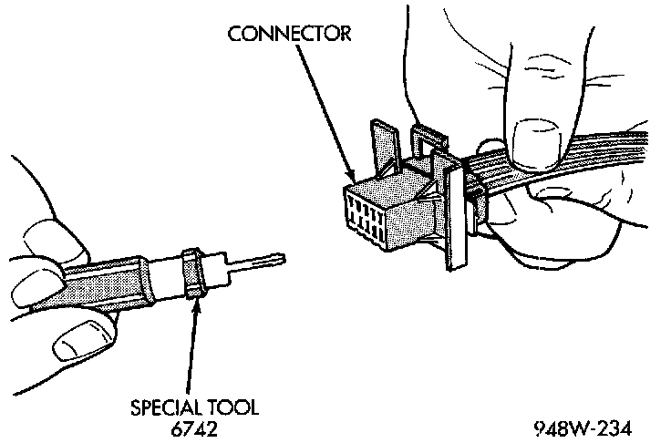
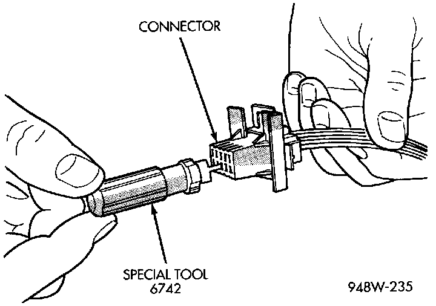

Terminal/Connector Repair-Molex Connectors
1. Disconnect the battery.2. Disconnect the connector from its mating half/component.
Molex Connector Repair:

3. Insert the terminal releasing special tool 6742 into the terminal end of the connector.
Using Special Tool 6742:

4. Using special tool 6742, release the locking fingers on the terminal.
5. Pull on the wire to remove it from the connector.
6. Repair or replace the connector or terminal, as necessary.